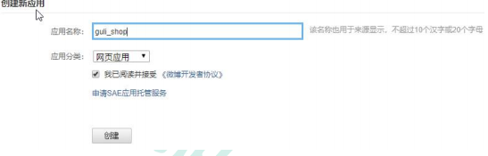
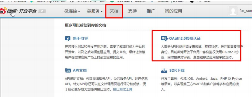
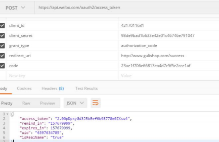
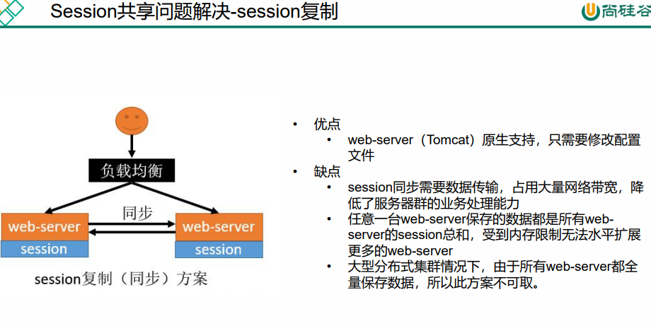

# 发送验证码倒计时
$(function () { | |
$("#sendCode").click(function () { // 触发点击发送验证码事件 | |
//2、倒计时 | |
if($(this).hasClass("disabled")) { // 判断是否在倒计时 | |
// 正在倒计时中 | |
} else { | |
//1、给指定手机号发送验证码 | |
$.get("/sms/sendCode?phone=" + $("#phoneNum").val(),function (data) { | |
if(data.code != 0) { | |
alert(data.msg); | |
} | |
}); | |
timeoutChangeStyle();// 调用下面执行方法 | |
} | |
}); | |
}); | |
var num = 60; | |
function timeoutChangeStyle() { | |
$("#sendCode").attr("class","disabled"); // 倒计时开始，禁用点击事件 | |
if(num == 0) { // 等于零则重置时间与禁用点击，可以继续重新点击发送验证码 | |
$("#sendCode").text("发送验证码"); | |
num = 60; | |
$("#sendCode").attr("class",""); | |
} else { | |
var str = num + "s 后再次发送"; | |
$("#sendCode").text(str); | |
setTimeout("timeoutChangeStyle()",1000); // 定时任务，传入函数，每秒执行，递归调用 | |
} | |
num --; | |
} |
# 使用 Spring Mvc 的视图映射
@Configuration | |
public class MyWebConfig implements WebMvcConfigurer { | |
/** | |
* 对应视图跳转 | |
* @param registry | |
*/ | |
@Override | |
public void addViewControllers(ViewControllerRegistry registry) { | |
registry.addViewController("/login.html").setViewName("login"); | |
registry.addViewController("/reg.html").setViewName("reg"); | |
} | |
} |
# 加密
// 密码进行 MD5 加密 | |
BCryptPasswordEncoder bCryptPasswordEncoder = new BCryptPasswordEncoder(); | |
String encode = bCryptPasswordEncoder.encode(vo.getPassword()); | |
memberEntity.setPassword(encode); | |
memberEntity.setMobile(vo.getPhone()); | |
memberEntity.setGender(0); | |
memberEntity.setCreateTime(new Date()); |
# 发送短信验证码
@ResponseBody | |
@GetMapping("sms/sendcode") | |
public R sendCode(@RequestParam("phone") String phone){ | |
// 接口防刷 | |
String redisCode = redisTemplate.opsForValue().get(AuthServerConstant.SMS_CODE_CACHE_PREFIX + phone); | |
if (!StringUtils.isEmpty(redisCode)) { | |
// 分割取时间进行判断是否在 60s 内 | |
long l = Long.parseLong(redisCode.split("_")[1]); | |
if(System.currentTimeMillis() - l < 60000){ | |
// 60s 内不能重复发送 | |
return R.error(BizCodeEnume.SMS_CODE_EXCEPTION.getCode(),BizCodeEnume.SMS_CODE_EXCEPTION.getMsg()); | |
} | |
} | |
// 拼接系统时间来判断不允许 60s 内对一个手机号重复发送验证码 | |
String substring = UUID.randomUUID().toString().replaceAll("-", "").substring(0, 5); | |
String code = substring + "_" + System.currentTimeMillis(); | |
// 验证码校验 redis 。手机号 key，验证码 value 10 分钟有效 | |
redisTemplate.opsForValue().set(AuthServerConstant.SMS_CODE_CACHE_PREFIX+phone,code,10, TimeUnit.SECONDS); | |
thirdPartFeignService.sendCode(phone, substring); | |
return R.ok(); | |
} |
# 登录
# OAuth2.0
- OAuth： OAuth（开放授权）是一个开放标准，允许用户授权第三方网站访问他们存储 在另外的服务提供者上的信息，而不需要将用户名和密码提供给第三方网站或分享他们 数据的所有内容。
- **OAuth2.0：** 对于用户相关的 OpenAPI（例如获取用户信息，动态同步，照片，日志，分 享等），为了保护用户数据的安全和隐私，第三方网站访问用户数据前都需要显式的向 用户征求授权。
- 官方版流程
（A）用户打开客户端以后，客户端要求用户给予授权。
（B）用户同意给予客户端授权。
（C）客户端使用上一步获得的授权，向认证服务器申请令牌。
（D）认证服务器对客户端进行认证以后，确认无误，同意发放令牌。
（E）客户端使用令牌，向资源服务器申请获取资源。
（F）资源服务器确认令牌无误，同意向客户端开放资源。
# 社交登录
# 微博登陆准备工作
1、进入微博开放平台
2、登陆微博，进入微连接，选择网站接入
3、选择立即接入
4、创建自己的应用

5、我们可以在开发阶段进行测试了
6、进入高级信息，填写授权回调页的地址
7、添加测试账号（选做）
8、进入文档，按照流程测试社交登陆

# 微博登陆测试
1、引导用户到如下地址
https://api.weibo.com/oauth2/authorize?client_id=YOUR_CLIENT_ID&response_type=code&redirect_uri=YOUR_REGISTERED_REDIRECT_URI
2、用户同意授权，页面跳转至 xxx/?code=CODE
http://www.gulishop.com/success?code=fef987b3f9ad1169955840b467bfc661
3、使用返回的 code，换取 access token
https://api.weibo.com/oauth2/access_token?client_id=YOUR_CLIENT_ID&client_secret=YOUR_C LIENT_SECRET&grant_type=authorization_code&redirect_uri=YOUR_REGISTERED_REDIRECT_URI &code=CODE
注意，上面这个是 post 请求
{ | |
"access_token": "2.00pDpxyGd3J5bEef6b98778e0ZKsu4", | |
"remind_in": "157679999", | |
"expires_in": 157679999, | |
"uid": "6397634785", | |
"isRealName": "true" | |
} |

4、使用 AccessToken 调用开发 API 获取用户信息
至此微博登陆调试完成。
Oauth2.0；授权通过后，使用 code 换取 access_token，然后去访问任何开放 API
1）、code 用后即毁
2）、access_token 在几天内是一样的
3）、uid 永久固定
# Session

# Spring Session
使用
官网：https://docs.spring.io/spring-session/docs/2.5.1/reference/html5/#samples
依赖
<dependency> | |
<groupId>org.springframework.boot</groupId> | |
<artifactId>spring-boot-starter-data-redis</artifactId> | |
</dependency> | |
<dependency> | |
<groupId>org.springframework.session</groupId> | |
<artifactId>spring-session-data-redis</artifactId> | |
</dependency> |
配置
spring: | |
session: | |
store-type: redis # 用 redis 做存储 | |
server: | |
servlet: | |
session: | |
timeout: 30m # 过期时间 |
启动类加启动注解
@EnableRedisHttpSession // 整合 redis 的 session | |
@EnableFeignClients | |
@EnableDiscoveryClient | |
@SpringBootApplication | |
public class GulimallAuthServerApplication { | |
public static void main(String[] args) { | |
SpringApplication.run(GulimallAuthServerApplication.class, args); | |
} | |
} |
配置完以后，session 将直接以 redis 方式进行存储
默认 session 作用域只在当前域名有用，我们可以自定义配置，扩大作用域，序列化机制默认 jdk 序列化，我们也可以配置
@Configuration | |
public class GulimallSessionConfig { | |
@Bean | |
public CookieSerializer cookieSerializer() { | |
DefaultCookieSerializer cookieSerializer = new DefaultCookieSerializer(); | |
// 放大作用域 | |
cookieSerializer.setDomainName("gulimall.com"); | |
cookieSerializer.setCookieName("GULISESSION"); | |
return cookieSerializer; | |
} | |
@Bean | |
public RedisSerializer<Object> springSessionDefaultRedisSerializer() { | |
return new GenericJackson2JsonRedisSerializer(); | |
} | |
} |